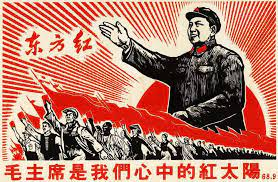

Informações Extras
Informação Base
Adicional
Bem Durante seu governo Mao Tsé-tung, instaurou uma ditadura que possuia sua ideologia como o maoísmo e que matou milhões por conta da fome
O maoismo, também chamado de Pensamento de Mao Tse Tung (em chinês: 毛澤東思想, pinyin: Máo Zédōng Sīxiǎng), é uma corrente do comunismo baseada nos ensinamentos de Mao Tsé-Tung (1893-1976). Na República Popular da China, o Pensamento de Mao Tse Tung é a doutrina oficial do Partido Comunista da China.
